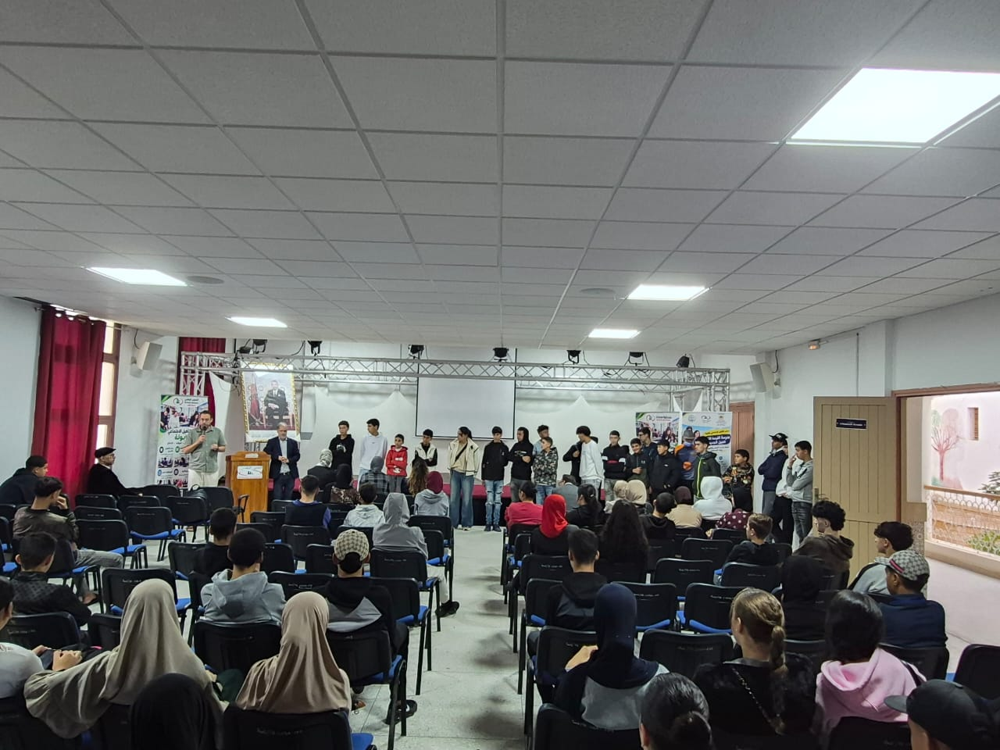

Lancement du Programme de la Deuxième Chance – Nouvelle Génération au Centre Taboula
L’Association Pont du Succès annonce le lancement du Programme de la Deuxième Chance – Nouvelle Génération au Centre Taboula pour la saison 2026/2027, dans le cadre de ses efforts visant à soutenir l’éducation, l’insertion et l’accompagnement des jeunes.
Mis en œuvre en coordination avec la Direction provinciale, ce programme offre aux jeunes une nouvelle chance d’apprentissage, de formation et d’accompagnement.